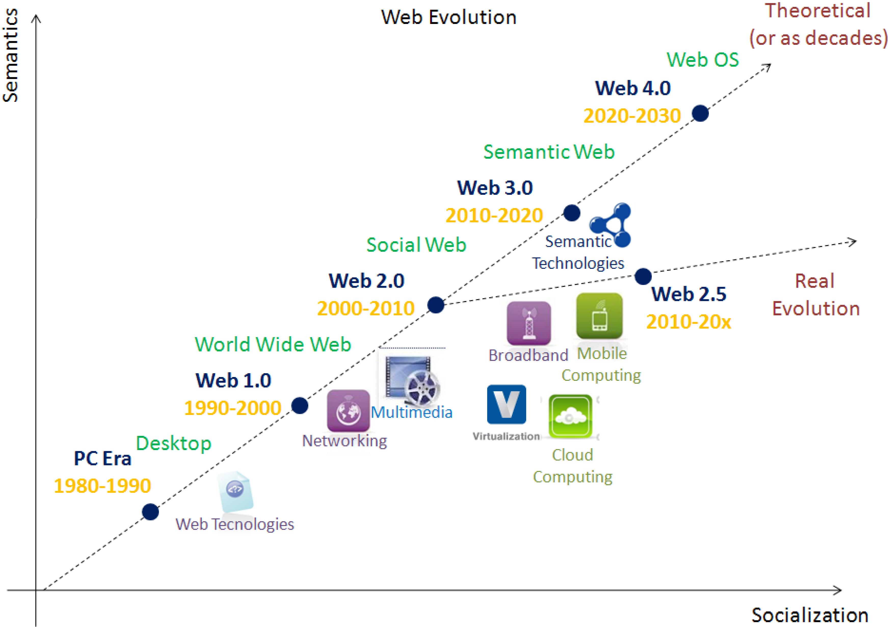

A Complete Guide to Core Internet & Web Concepts
Web 3.0 is the term used to describe the next major evolution of the internet, currently in its early stages of development. It represents a vision of a decentralised web — one that is not controlled by a handful of large technology companies, but instead operates on distributed networks where users have greater ownership of their data and digital assets.
Unlike Web 2.0, where platforms like Facebook and Google collect and monetise your data, Web 3.0 aims to give individuals control over their own data and online identity. This is largely made possible through blockchain technology, which allows data to be stored in a distributed, transparent, and tamper-resistant way.

Blockchain is a core technology in Web 3.0. It is a distributed ledger that records transactions across many computers simultaneously, making data highly resistant to alteration or tampering. Cryptocurrencies like Bitcoin and Ethereum are built on blockchain technology.
Smart Contracts are self-executing agreements written in code and stored on a blockchain. They automatically enforce the terms of an agreement without requiring a central authority or middleman. NFTs (Non-Fungible Tokens) and DeFi (Decentralised Finance) are other prominent Web 3.0 concepts built on these foundations.
Web 3.0 is also sometimes associated with the concept of the Semantic Web — originally proposed by Tim Berners-Lee — in which data on the web is structured and tagged in a way that machines can understand and interpret it meaningfully. This would allow computers to process web content much like humans do, enabling far more intelligent search and data processing.